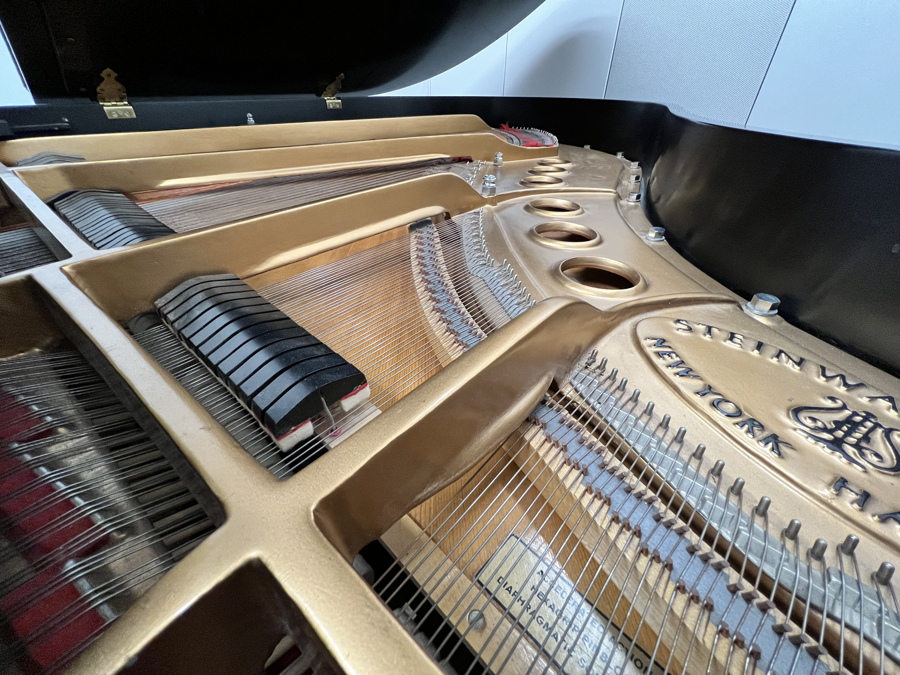
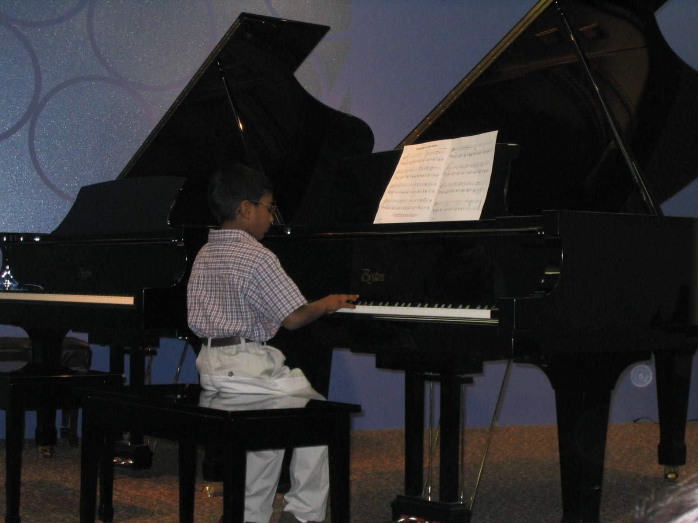

I transferred to UST in the spring of 2020 from ISU. Before that spring semester, I had not touched the piano since 9th grade of highschool when I was about 14/15 years old. After coming to UST I learned that they have a great music program and provide music lessons for many different instruments. I wanted to start playing again with some guidance. I was matched with a wonderful instructor named Ora Itkin. She has been an inspiration to me and helped revive my love and passion for music. After starting that spring, I have continued to play and have played and performed over 12 pieces during my time at UST. Each piece taking hours of practice and memorization. Through the process of relearning the piano and it has taught me how pick up any subject or concept quicly. This skill can be applied to all walks of my life.
It was a diffucult to find time and motivation at times to practice the piano. I eventually found that it offers a great getaway from the troubles of everyday life, providing an oasis for creativity and serenity. When I was younger, I used to dread playing/practicing the piano. I had a natural skill to it, but never put in the time to practice. Now I use piano as a way to clear my head and revive my focus. Learning Piano again with Ora has also helped me with another important skill that will forever stick with me - working smarter, not harder. I learned that effective practices were much more benifical to me than long practices. This concept can be translated directly to CS, were a lot of times I can get stuck coding away, but not writing effective code. I hope to bring this skill with me as I start working in order to become a more effective developer.
Back to Projects